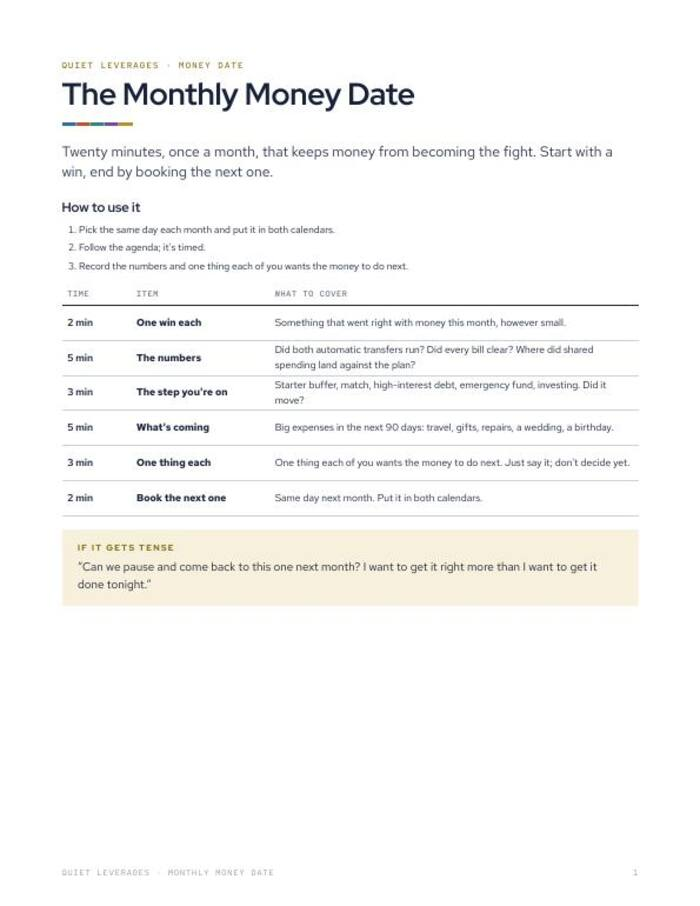
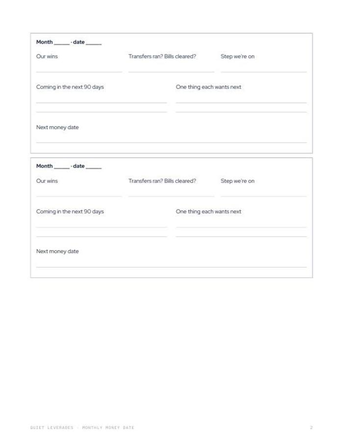

Twenty minutes, once a month, so money stops turning into the fight.
A timed six-part agenda for two people, with twelve monthly record boxes. Start with a win, end by booking the next one.
Printable PDF. Print it or fill it in on a tablet. Instant download.

A fixed agenda
Six parts with minutes beside each. Nobody has to decide what to talk about.
Twelve months of records
A box per month for wins, numbers and what each person wants next.
A line for when it gets tense
One sentence on the page to pause the talk and come back to it.
monthly agenda
timed parts
monthly record boxes
of US adults began 2026 feeling financial stress. A short, regular conversation is easier to keep up than a long, rare one.
NEFE, Jan 2026What changes after you fill it in
The same day every month
You pick one day, put it in both calendars, and the habit does the remembering.
Fewer surprises
Upcoming costs for the next 90 days get said out loud before they land.
A talk that starts well
Each date opens with one win each and closes by booking the next one.
A record you can look back on
Twelve boxes show what you decided and which step you are on.
Everything in the download
- Timed agenda. One win each, the numbers, the step you are on, what is coming, one thing each, book the next.
- 12 monthly record boxes. Wins, transfers and bills, the step you are on, the next 90 days.
- A line for when it gets tense. Words to pause and return to it.
- Printable PDF. 7 pages, US Letter, prints on A4 at fit to page.

Pick a day, follow the clock, book the next
Pick the day
Choose the same day each month and put it in both calendars.
Follow the agenda
Six parts, twenty minutes. Start with a win each.
Record and book
Write the numbers and one thing each person wants next. Book the next date before you stop.
A good fit if money talks keep getting postponed
Use this if
- You share money with a partner and talk about it only when something goes wrong.
- You want a short, repeatable format rather than one big conversation.
- You prefer paper or a tablet over another app.
Skip it if
- You want the full set of five conversations and three account models. See The Couples Money Reset.
- You are after personalised financial advice. This is a meeting format.
- You are managing money alone. Debt Payoff Planner may suit better.
Why a regular money talk helps
of US adults began 2026 feeling financial stress.
NEFE, Jan 2026report money dysmorphia: feeling broke despite a healthy position.
Intuit Credit Karma, via Finderare very confident they split spare money well across debt, savings and retirement. Among people earning $200K+, 64% are only somewhat confident.
Vestwell, June 2026What readers say about Monthly Money Date
Book the first date this week
One printable, twenty minutes a month, twelve months of record pages.
- Six-part timed agenda
- 12 monthly record boxes
- A line for when it gets tense
Before you decide
How long does a money date take?
Twenty minutes. The agenda gives each part a time: two, five, two, five, three and two minutes.
Who is it for?
Couples who share some or all of their money and want a regular, calm way to talk about it.
Can I use it on a tablet?
Yes. It is a PDF, so any PDF app works. You can also print it on US Letter or on A4 at fit to page.
Do we need a spreadsheet?
No. The record boxes are on paper. The Couples Money Reset adds a Google Sheet and more if you want it.
What if the conversation gets tense?
The page has a line for exactly that: a way to pause and return when you are both calmer.
Is this financial advice?
No. It is a meeting format. General education, not financial advice.
The next step after this one
Twenty minutes, same day each month.
Pick the day and book the first one.
Get it for $9Instant download on Gumroad.